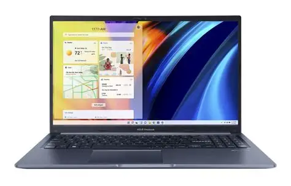

ASUS VivoBook 15
11.000 MDL
Specificații Tehnice
- Procesor: Intel Core i3-1215U
- Memorie RAM: 8GB DDR4
- Stocare: 256GB SSD
- Ecran: 15.6" NanoEdge Display
- Tastatură: Iluminată
- Greutate: Doar 1.7 kg
ASUS VivoBook 15 este laptopul ideal pentru utilizarea zilnică, oferind un design modern cu margini ultra-subțiri (NanoEdge). Este compact, ușor și perfect pentru studenții sau profesioniștii care sunt mereu în mișcare.